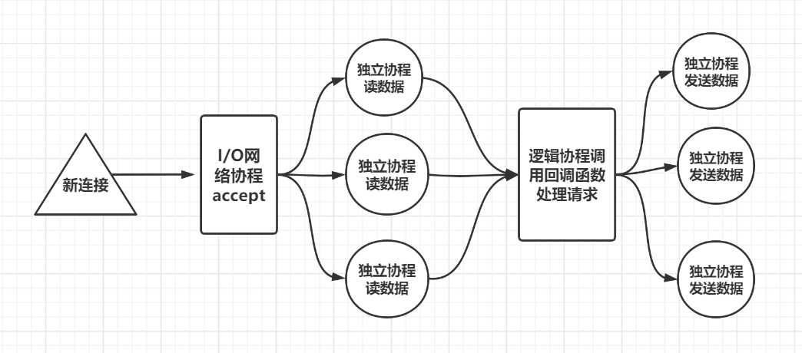

为什么要造轮子
目前很著名的轮子有libevent，boost等高并发的网络库，可以说著名的网络库我都用过，用过才知道当要实现一些定制化的功能时并不方便，不但要了解底层源码，而且还要进行适当的改造，总有种黑盒开发的感觉，所以在15年我就开始自己封装一些epoll,select模型，当时基于多路复用用reactor模式封装了betternet，虽然稳定性不如成熟的网络库，但是可以根据需求灵活修改网络层和应用层，这是难能可贵的。市面上也有一些成型的即时通信server，使用过kbengine，origine等集成度较高的server，当要实现一些心跳，逻辑检测，连接管理等需求时，还是要修改底层的源码，感觉很糟糕。18年接触golang，net包里封装的网络模型和协程管理，很完善的调度策略让我眼前一亮，所以考虑能不能基于golang的官方net包做一些框架上的设计，搭建一个高可用的网络服务。19年基于net包实现了wentby这个服务器，并发和稳定性都不错，最近又翻看了原来的代码，觉得很多地方可以精简一下，而且不想为了兼容别人的开发习惯降低服务器的效率，也不想增加复杂度，所以干脆做一个精简的server给自己用，只要他稳定高效就可以了，线程安全这种问题交由开发者考虑。读了redis网络服务那块也就500行，简约而不简单。
简单的设计
我的想法时尽可能减少线程切换的开销，尽可能精简的处理消息，同时也尽可能减少资源的开销，我的想法是这样的

当有新的连接建立时，I/O网络协程开辟新的协程，这个协程管理新的连接，负责读取客户端发送的数据。理论上每个连接建立后都有一个单独的协程为其服务，所以对于不同的连接，他们读取数据是并发进行的，无需加锁。同时在各自的协程里完成粘包处理，反序列化为一个逻辑请求包，将该逻辑请求投递的逻辑协程中。逻辑协程可以配置多个，也可以配置一个，建议配置一个，因为多协程处理共享区存在加锁问题，我在逻辑协程底层做了判断，如果逻辑协程数大于1则加锁，否则无锁。我觉得大部分的请求都是I/O密集型的，所以逻辑队列为1个足够，而且能保证应用层是线性处理的。当逻辑协程处理好逻辑请求后，将数据包投递到发送协程。这里发送协程数量也是可配置的，为了尽可能提升发送效率，我这里根据连接的id分配给指定协程发送，比如连接id为1的socket他的发送请求只交给发送携程1，这里用到了取余分配的原则。
用到了哪些技术和库
1 网络方面用到了go的原生net包。
2 协程分配和管理是自己实现的，协同和退出等通知都是通过channel实现的
3 配置和日志库用的beego的，主要是方便，懒得写文件管理。
4 由于go的网络层不会提供文件描述符，这里用到了uuid库生成string类型uid管理tcp
5 websocket用的原生net/websocket包，也没有单独开辟协程读写和处理，我觉得越简单越好
5 websocket每个请求其实是放在独立的协程中管理的，所以各协程处理逻辑时要加锁，这个我处理好了，应用层只需要安心写逻辑就可以。
效率怎么样
效率测试了一下，单节点8000以上的长连接，每个连接不间断收发请求未出现卡顿现象，延迟也都在10ms之内，而且未出现连接异常中断和丢包现象。
是否商用
目前用于公司内部呼叫系统的并发服务，基于webrtc实现信令控制，消息转发。
源码地址
目前代码已经开源
https://github.com/secondtonone1/wentmin
展望
随着经验的丰富，肯定会不满足现状的，以后会不断优化和扩充。